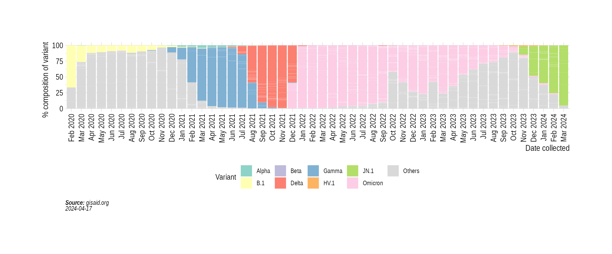
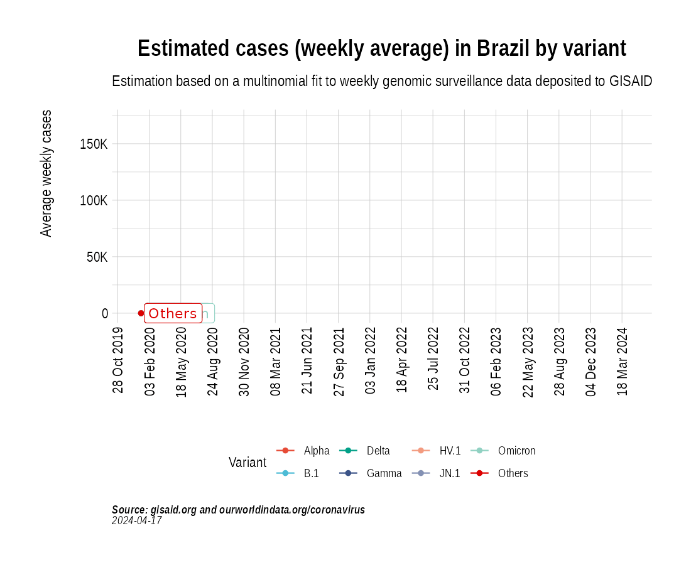
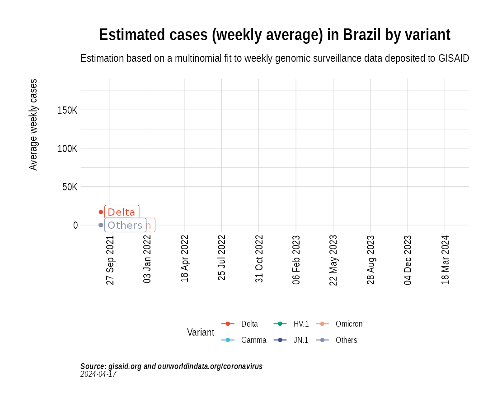
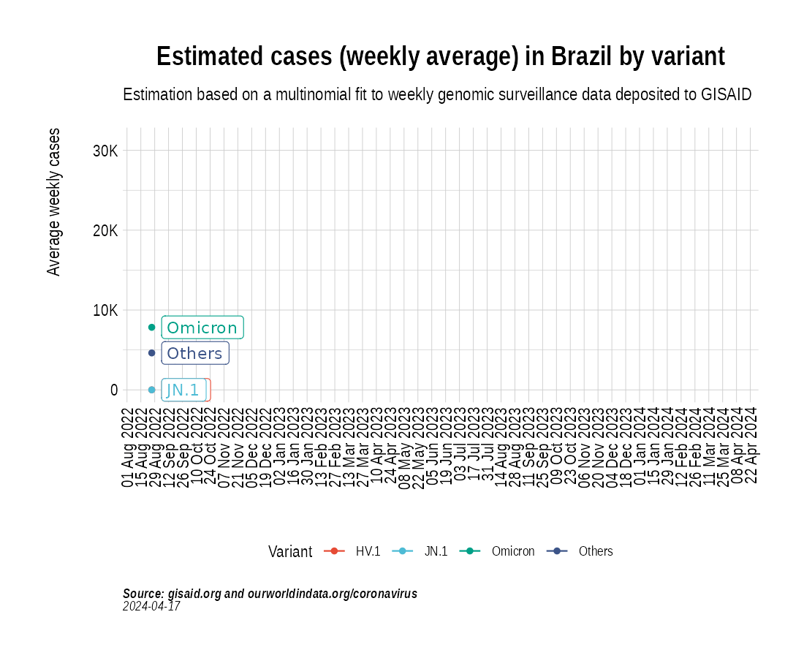

Animation of projected weekly cases - Brazil
Source:vignettes/VariantAnimation-Brazil.Rmd
VariantAnimation-Brazil.RmdsuppressPackageStartupMessages({
library(covmuller)
library(COVID19)
library(tidyverse)
})
theme_set(CovmullerTheme())Get variants data for Brazil
gisaid_metadata <- qs::qread("~/data/epicov/metadata_tsv_2024_01_11.qs")
gisaid_brazil <- gisaid_metadata %>%
filter(Country == "Brazil") %>%
filter(Host == "Human")
# format metadata
gisaid_brazil <- FormatGISAIDMetadata(gisaid_brazil)
gisaid_brazil <- gisaid_brazil %>%
arrange(State, MonthYearCollected) %>%
filter(pangolin_lineage != "Unknown")
vocs <- GetVOCs()
custom_voc_mapping <- list(
`JN.1` = "JN.1",
`JN.1.*` = "JN.1",
`HV.1` = "HV.1",
`HV.1.*` = "HV.1"
)
gisaid_brazil <- gisaid_brazil %>% filter(pangolin_lineage != "None")
gisaid_brazil <- CollapseLineageToVOCs(
variant_df = gisaid_brazil,
vocs = vocs,
custom_voc_mapping = custom_voc_mapping,
summarize = FALSE
)Get weekly cases for Brazil
GetCases <- function() {
data <- read.csv("https://raw.githubusercontent.com/owid/covid-19-data/master/public/data/cases_deaths/new_cases.csv")
confirmed <- data %>% select(date, Brazil)
colnames(confirmed)[2] <- c("cases")
confirmed$MonthYear <- GetMonthYear(confirmed$date)
confirmed$WeekYear <- tsibble::yearweek(confirmed$date)
return(confirmed)
}
GetCasesLong <- function() {
data <- read.csv("https://raw.githubusercontent.com/owid/covid-19-data/master/public/data/cases_deaths/new_cases.csv")
confirmed <- data %>% select(date, Brazil)
colnames(confirmed)[2] <- c("cases")
confirmed$MonthYear <- GetMonthYear(confirmed$date)
confirmed$WeekYear <- tsibble::yearweek(confirmed$date)
confirmed_subset_weekwise <- confirmed %>%
group_by(WeekYear) %>%
summarise(cases = mean(cases, na.rm = T)) %>%
arrange(WeekYear)
confirmed_subset_weekwise$cases <- ceiling(confirmed_subset_weekwise$cases)
confirmed_subset_dateweekwise_long_india <- confirmed_subset_weekwise %>%
rename(n = cases) %>%
rename(WeekYearCollected = WeekYear)
}
confirmed <- GetCases()
confirmed_subset_dateweekwise_long <- GetCasesLong()
gisaid_brazil_weekwise <- SummarizeVariantsWeekwise(gisaid_brazil)Distribution of variants
state_month_counts <- SummarizeVariantsMonthwise(gisaid_brazil)
state_month_counts$State <- "Brazil"
state_month_prevalence <- CountsToPrevalence(state_month_counts)
vocs <- GetVOCs()
state_month_prevalence <- CollapseLineageToVOCs(
variant_df = state_month_prevalence,
vocs = vocs,
custom_voc_mapping = custom_voc_mapping, summarize = FALSE
)
p5 <- StackedBarPlotPrevalence(state_month_prevalence)
p5
Project weekly cases to variant prevalence data from GISAID
voc_to_keep <- gisaid_brazil_weekwise %>%
group_by(lineage_collapsed) %>%
summarise(n_sum = sum(n)) %>%
filter(n_sum > 50) %>%
pull(lineage_collapsed) %>%
unique()
gisaid_brazil_weekwise <- gisaid_brazil_weekwise %>% filter(lineage_collapsed %in% voc_to_keep)
brazil_cases_pred_prob_sel_long <- FitMultinomWeekly(gisaid_brazil_weekwise, confirmed_subset_dateweekwise_long)
#> # weights: 24 (15 variable)
#> initial value 439814.238114
#> iter 10 value 256033.720738
#> iter 20 value 142234.034232
#> iter 30 value 120096.926154
#> iter 40 value 115996.408661
#> iter 50 value 101694.726489
#> iter 60 value 101679.150425
#> iter 60 value 101679.150298
#> iter 60 value 101679.150294
#> final value 101679.150294
#> converged
the_anim <- PlotVariantPrevalenceAnimated(brazil_cases_pred_prob_sel_long, title = "Estimated cases (weekly average) in Brazil by variant", caption = "**Source: gisaid.org and ourworldindata.org/coronavirus**<br>", date_breaks = "100 days")
gganimate::anim_save(filename = here::here("docs/articles/Brazil_animated.gif"), animation = the_anim)
Look at cases from 2022,
confirmed_subset_dateweekwise_long <- GetCasesLong() %>%
filter(WeekYearCollected >= tsibble::yearweek("2021 W35"))
gisaid_brazil_subset <- gisaid_brazil %>% filter(MonthYearCollected > "Oct 2021")
gisaid_brazil_weekwise <- SummarizeVariantsWeekwise(gisaid_brazil_subset)
voc_to_keep <- gisaid_brazil_weekwise %>%
group_by(lineage_collapsed) %>%
summarise(n_sum = sum(n)) %>%
filter(n_sum > 50) %>%
pull(lineage_collapsed) %>%
unique()
gisaid_brazil_weekwise <- gisaid_brazil_weekwise %>% filter(lineage_collapsed %in% voc_to_keep)
brazil_cases_pred_prob_sel_long <- FitMultinomWeekly(gisaid_brazil_weekwise, confirmed_subset_dateweekwise_long)
#> # weights: 24 (15 variable)
#> initial value 242593.481577
#> iter 10 value 67367.516549
#> iter 20 value 50299.321008
#> iter 30 value 48568.582744
#> iter 40 value 48399.528910
#> iter 50 value 48216.001702
#> final value 48215.991366
#> converged
the_anim <- PlotVariantPrevalenceAnimated(brazil_cases_pred_prob_sel_long, title = "Estimated cases (weekly average) in Brazil by variant", caption = "**Source: gisaid.org and ourworldindata.org/coronavirus**<br>", date_breaks = "100 days")
gganimate::anim_save(filename = here::here("docs/articles/Brazil_animated_2021.gif"), animation = the_anim) Look at cases from 2023
confirmed_subset_dateweekwise_long <- GetCasesLong() %>%
filter(WeekYearCollected >= tsibble::yearweek("2022 W35"))
gisaid_brazil_subset <- gisaid_brazil %>% filter(MonthYearCollected > "October 2022")
gisaid_brazil_weekwise <- SummarizeVariantsWeekwise(gisaid_brazil_subset)
voc_to_keep <- gisaid_brazil_weekwise %>%
group_by(lineage_collapsed) %>%
summarise(n_sum = sum(n)) %>%
filter(n_sum > 50) %>%
pull(lineage_collapsed) %>%
unique()
gisaid_brazil_weekwise <- gisaid_brazil_weekwise %>% filter(lineage_collapsed %in% voc_to_keep)
brazil_cases_pred_prob_sel_long <- FitMultinomWeekly(gisaid_brazil_weekwise, confirmed_subset_dateweekwise_long)
#> # weights: 16 (9 variable)
#> initial value 42782.430279
#> iter 10 value 25591.413964
#> iter 20 value 24307.240935
#> iter 20 value 24307.240870
#> final value 24307.240870
#> converged
the_anim <- PlotVariantPrevalenceAnimated(brazil_cases_pred_prob_sel_long, title = "Estimated cases (weekly average) in Brazil by variant", caption = "**Source: gisaid.org and ourworldindata.org/coronavirus**<br>")
gganimate::anim_save(filename = here::here("docs/articles/Brazil_animated_2023.gif"), animation = the_anim)
Look at cases in the past few weeks
confirmed_subset_dateweekwise_long <- GetCasesLong() %>%
filter(WeekYearCollected >= tsibble::yearweek("2023 W23"))
gisaid_brazil_subset <- gisaid_brazil %>% filter(MonthYearCollected > "June 2023")
gisaid_brazil_weekwise <- SummarizeVariantsWeekwise(gisaid_brazil_subset)
voc_to_keep <- gisaid_brazil_weekwise %>%
group_by(lineage_collapsed) %>%
summarise(n_sum = sum(n)) %>%
filter(n_sum > 50) %>%
pull(lineage_collapsed) %>%
unique()
gisaid_brazil_weekwise <- gisaid_brazil_weekwise %>% filter(lineage_collapsed %in% voc_to_keep)
brazil_cases_pred_prob_sel_long <- FitMultinomWeekly(gisaid_brazil_weekwise, confirmed_subset_dateweekwise_long)
#> # weights: 16 (9 variable)
#> initial value 7589.961627
#> iter 10 value 3097.145675
#> iter 20 value 2913.994381
#> iter 30 value 2912.954507
#> final value 2905.363627
#> converged
the_anim <- PlotVariantPrevalenceAnimated(brazil_cases_pred_prob_sel_long, title = "Estimated cases (weekly average) in Brazil by variant", caption = "**Source: gisaid.org and ourworldindata.org/coronavirus**<br>")
gganimate::anim_save(filename = here::here("docs/articles/Brazil_animated_2024.gif"), animation = the_anim)